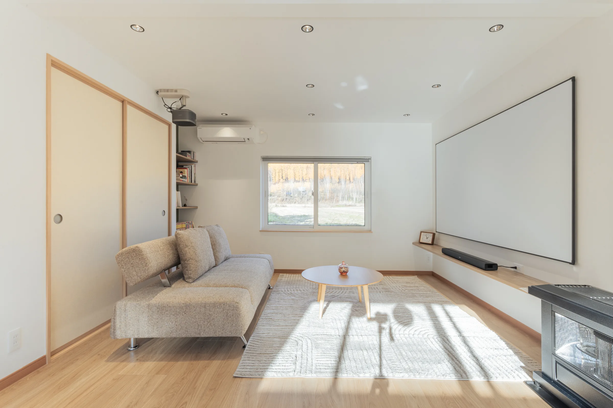
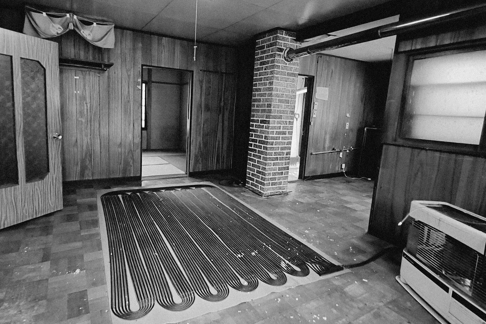
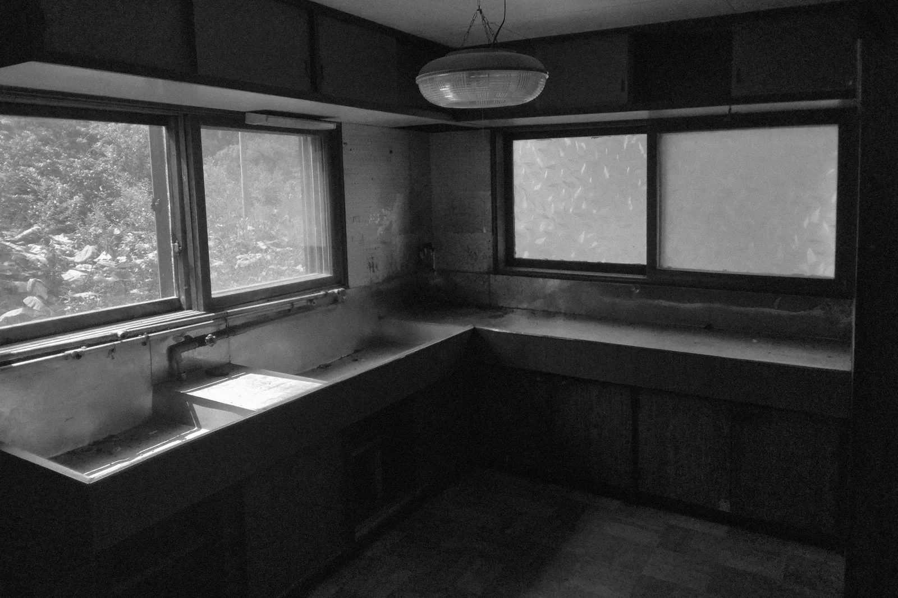
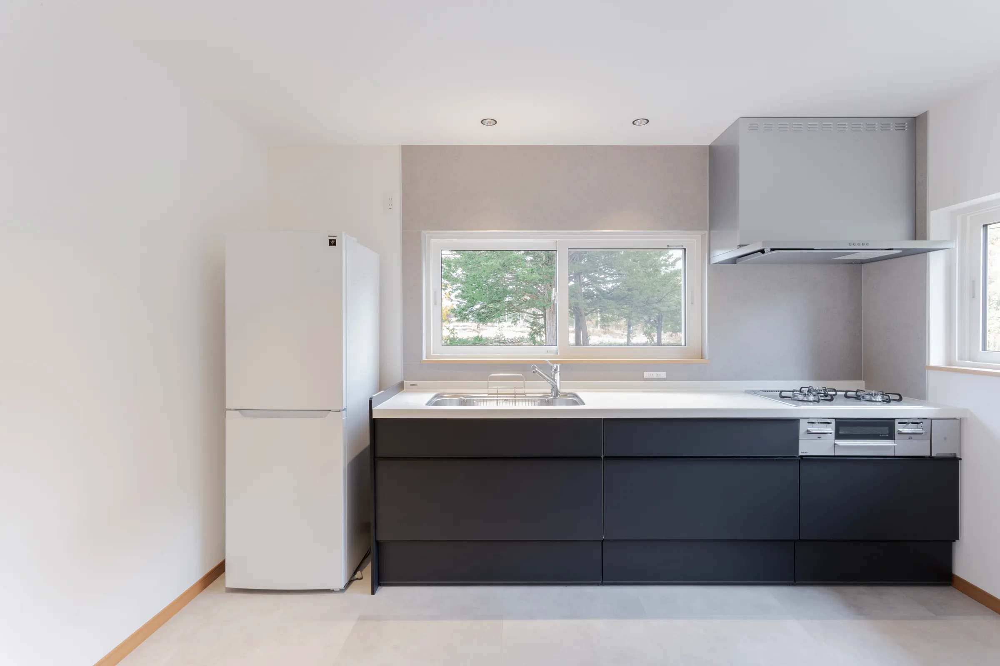
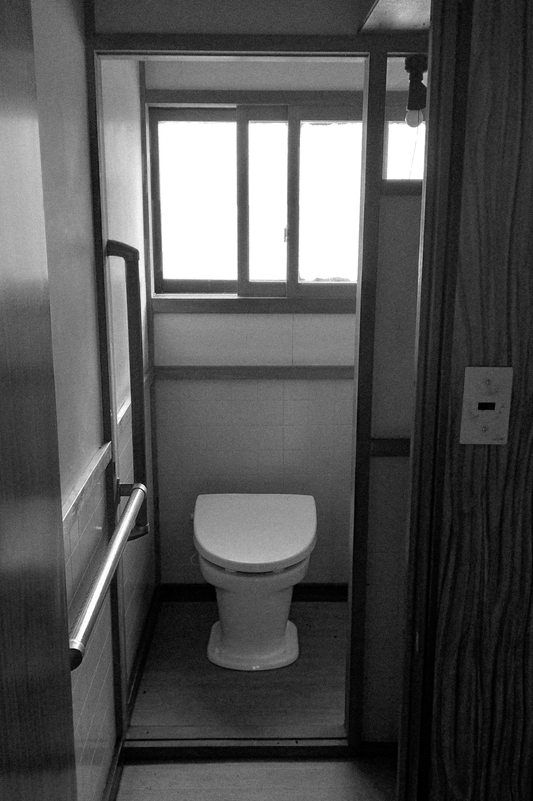
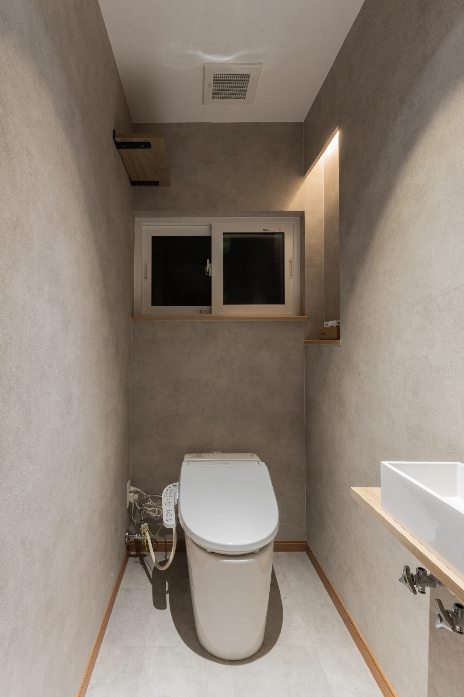

構造に手を加えない改修
内装・設備の更新、間取りの見直しなど、柱や梁などの構造に手を加えない範囲の改修を、デザイン監修とプロデュースでお手伝いします。宿・住宅・店舗・事務所など、建物の種類は問いません。
UBAKU / Design
UBAKU Design
古い建物には、新しく建てるものにはない時間の厚みがあります。UBAKU Designは、その建物の良さを生かした改修を、コンセプトづくりから仕上がりまで伴走します。宿・住宅・店舗・事務所など、建物の種類は問いません。

UBAKU Villa 宇莫別荘
美瑛の集落・中宇莫別に建つ築約60年の建物を、フルリノベーションして一棟貸しの宿に。暗く閉じていた部屋に光を入れ、窓の外の森や丘が主役になるよう、白い壁と明るい木の床でまとめました。2026年1月開業。
木目の壁と石油ストーブの部屋を、窓の景色が映える白い空間に。

古い流し台を、ゲストが料理を楽しめるシステムキッチンに。


手すりの付いた古いトイレを、落ち着いた色の空間に。


内装・設備の更新、間取りの見直しなど、柱や梁などの構造に手を加えない範囲の改修を、デザイン監修とプロデュースでお手伝いします。宿・住宅・店舗・事務所など、建物の種類は問いません。
工事はご紹介する工事会社と直接ご契約いただきます。UBAKUは工事を請け負わず、監修とプロデュースに専念するので、立場をはさまずに、お客さまの側に立って進められます。
確認申請が必要になるような大規模な改修は、提携する建築士と連携して進めます。
建物の状態と、どう使いたいかをうかがいます。
その建物と土地らしさを生かした方向性を決めます。
宿や店舗なら、改修にかける費用と収支の見通しを立てます。
間取り・色・素材・家具まで、仕上がりを監修します。
工事会社をご紹介し、仕上がりまで伴走します。
自分たちで宿を運営しているからこそ、泊まる人・働く人・掃除をする人まで、使う人の目線で改修を考えます。
見た目だけでなく、改修にかける費用と、その後の収支まで。不動産の実務の目線で、無理のない改修を一緒に決めます。
壊して新しくするのではなく、その建物にしかない良さを残し、いまの暮らしや使い方に合わせて編み直します。
UBAKU Consulting
宿の開業・運営、不動産開発や新規事業のご相談は、UBAKU Consulting が承ります。改修とあわせて、事業の組み立てからご相談いただけます。
工事は、ご紹介する工事会社と直接ご契約いただく形です。UBAKUは監修とプロデュースの立場で、工事会社とのやりとりや仕上がりの確認まで伴走します。
はい。住宅・店舗・事務所など、建物の種類は問いません。構造に手を加えない範囲の改修であれば、お気軽にご相談ください。
確認申請が必要になるような大規模な改修は、提携する建築士と連携して進めます。まずは建物の状態をお聞かせください。
建物の大きさや改修の範囲に合わせてお見積りします。まずはお問い合わせフォームから、建物の状況とご希望をお聞かせください。
はい。宿の開業・運営や事業の組み立ては UBAKU Consulting が担当します。改修とあわせてご相談いただけます。
建物のこと、お聞かせください。
古い建物を生かしたい、宿や店舗に変えたい、どこから手をつければいいかわからない。まだ形になっていない思いつきでも大丈夫です。